Blue-lined
flatworm
Pseudoceros concinnus*
Family
Pseudocerotidae
updated
Feb 2020
Where
seen? This small pale flatworm elegantly edged in blue with a central blue stripe is regularly
encountered on many of our shores, on coral rubble near living reefs.
'Concinnus' means 'elegant' in Latin.
Features: 2-4cm long. Body creamy-white to bluish-creamy-white. Two fine blue lines in the centre, which are usually so close to one another that they appear to be one solid blue line. In between the two fine blue lines, is the body colour. Has
a pair of pseudotentacles made up of simple folded edges
of the body.
Sometimes mistaken for similar flatworms. Here's more on how to tell apart small flatworms with one central line and three central lines.
Good mother: One study has found this worm to display long-term parental care. |

Sentosa, May 08 |

Pseudotentacles simple fold.
|
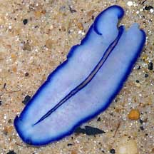
Two fine blue lines in the centre.
Pulau Semakau, Sep 05 |
*Species are difficult to positively identify without close examination.
On this website, they are grouped by external features for convenience of
display.
| Blue-lined flatworms on Singapore shores |
| Other sightings on Singapore shores |
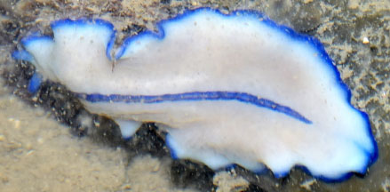
Changi, Aug 19
Photo shared by Loh Kok Sheng on facebook.
|
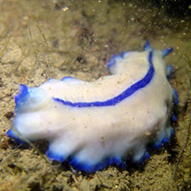
Changi, Aug 19
Shared by Jianlin Liu on facebook. |
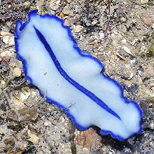
Pulau Sekudu, Jul 16
Photo shared by Loh Kok Sheng on his blog. |
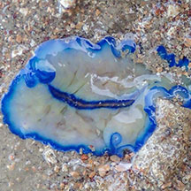
Beting Bronok, Jul 20
Photo shared by Vincent Choo on facebook. |
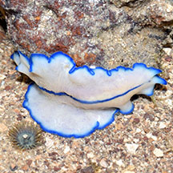
Beting Bronok, Jul 19
Photo shared by Loh Kok Sheng on facebook. |
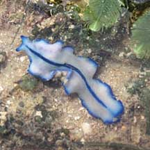
Chek Jawa, Oct 10
Photo shared by Neo Mei Lin on her
blog. |
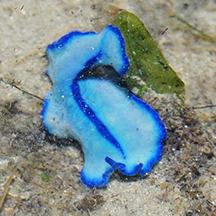
Chek Jawa, Jan 14
Photo shared by Loh Kok Sheng on his blog. |
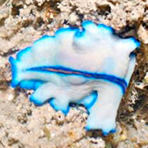
Chek Jawa, Jul 13
Photo shared by Loh Kok Sheng on his blog. |
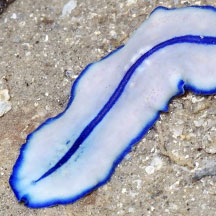
Chek Jawa, Jul 16
Photo shared by Loh Kok Sheng on facebook. |
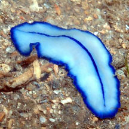
Chek Jawa, Jul 18
Photo shared by Jianlin LIu on facebook. |
|
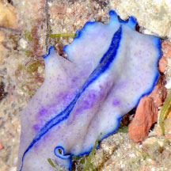
Pulau Sekudu, Jul 19
Photo shared by Loh Kok Sheng on facebook. |
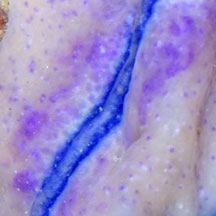 |
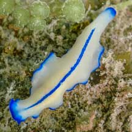
East Coast (PCN), May 21
Photo shared by Vincent Choo on facebook. |
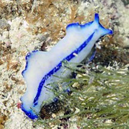
Labrador, Sep 19
Photo shared by Shawne Goh on facebook. |
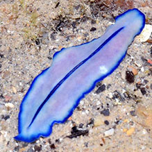
Berlayar Creek, Feb 20
Shared by Loh Kok Sheng on facebook |
|
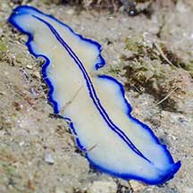
Sentosa Tg Rimau, Apr 21
Shared by Vincent Choo on facebook. |
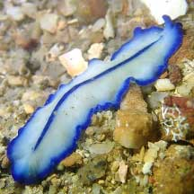
Sentosa Serapong, Jul 21
Shared by JIanlin Liu on facebook. |
|
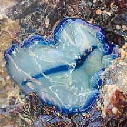
Lazarus Island, Nov 20
Photo shared by Vincent Choo on facebook. |
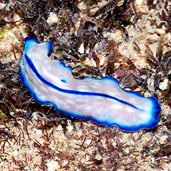
Seringat-Kias, Aug 15
Shared by Loh Kok Sheng on his
blog. |
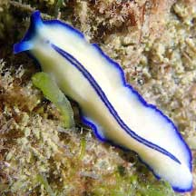
St. John's Island, Apr 21
Shared by Jianlin Liu on facebook. |
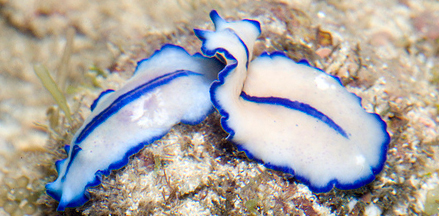
Sentosa, Sep 11
Photo shared by Marcus Ng on flickr. |
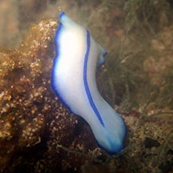
Sentosa Serapong, May 17
Shared by Jianlin Liu on facebook. |
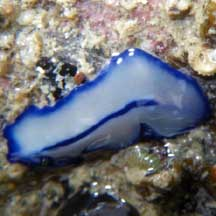
Lazarus, Feb 09
Shared by Loh Kok Sheng on his
blog. |
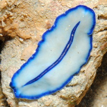
Lazarus, Jul 11
Shared by Loh Kok Sheng on his
blog. |
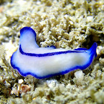
Big Sisters Island, Jan 20
Shared by Jianlin Liu on facebook. |
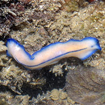
Kusu Island, May 16
Photo shared by Loh Kok Sheng on facebook. |
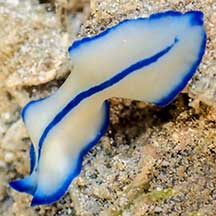
Cyrene, Apr 21
Photo shared by Vincent Choo on facebook. |
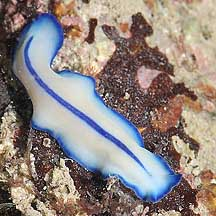
Pulau Jong, May 10
Photo shared by James Koh on his
blog. |
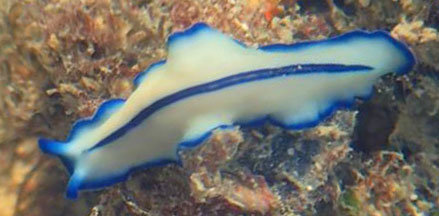
Pulau Jong, Jun 17
Photo shared by Liz Lim on facebook.
|
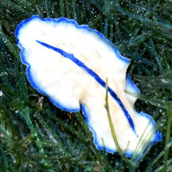
Pulau Jong, Jun 19
Photo shared by Loh Kok Sheng on facebook. |
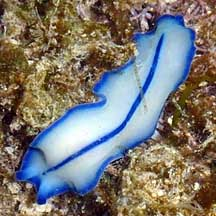
Pulau Hantu,
Jun 10
Photo shared by Loh Kok Sheng on his
blog. |
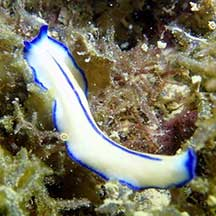
Pulau Hantu,
Apr 21
Photo shared by Jianlin Liu on facebook. |
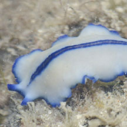
Terumbu Hantu, Jun 16
Photo shared by Rene Ong on facebook. |
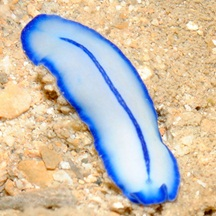
Terumbu
Bemban, Apr 11
Photo shared by Loh Kok Sheng on his
blog. |
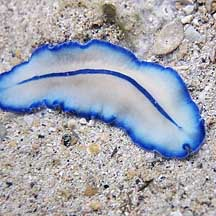
Terumbu Semakau, May 10
Photo shared by James Koh on his
blog. |
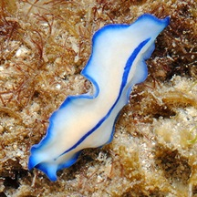
Beting Bemban Besar, May 11
Photo shared by Loh Kok Sheng on his
blog. |
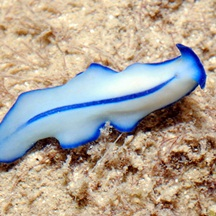
Terumbu Pempang Tengah, May 11
Photo shared by Loh Kok Sheng on his
blog. |
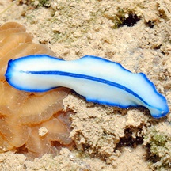
Terumbu
Pempang Laut, Apr 11
Photo shared by Loh Kok Sheng on his
blog. |
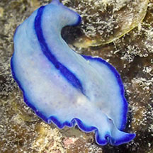
Terumbu
Pempang Laut, Mar 24
Photo shared by Vincent Choo on facebook. |
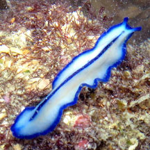
Raffles Lighthouse, Nov 16
Photo shared by Jianlin Liu on facebook. |
|
|
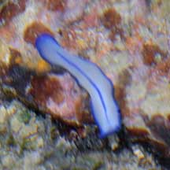
Pulau Biola,
Dec 09 |
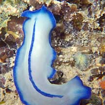
Pulau Biola,
Dec 09
Photo shared by Loh Kok Sheng on his
flickr. |
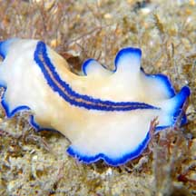
Pulau Biola,
Dec 09
Photo shared by Loh Kok Sheng on his
flickr. |
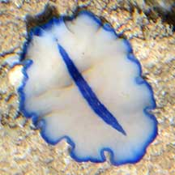
Pulau Salu,
Apr 21
Photo shared by Loh Kok Sheng on facebook. |
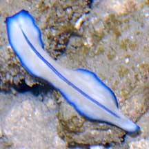
Pulau Biola,
May 10 |
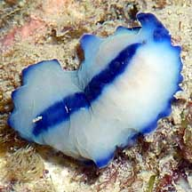
Pulau Senang,
Jun 10
Photo shared by Loh Kok Sheng on his
flickr. |
| Blue-lined flatworm gliding (Cyrene), Jun 12 |
Acknowledgement
With grateful thanks to Leslie H. Harris of the Natural
History Museum of Los Angeles County for comments on this worm
and its identification.
Grateful thanks to Rene Ong for sharing details and identifying the flatworms on this page.
References
|
|
|